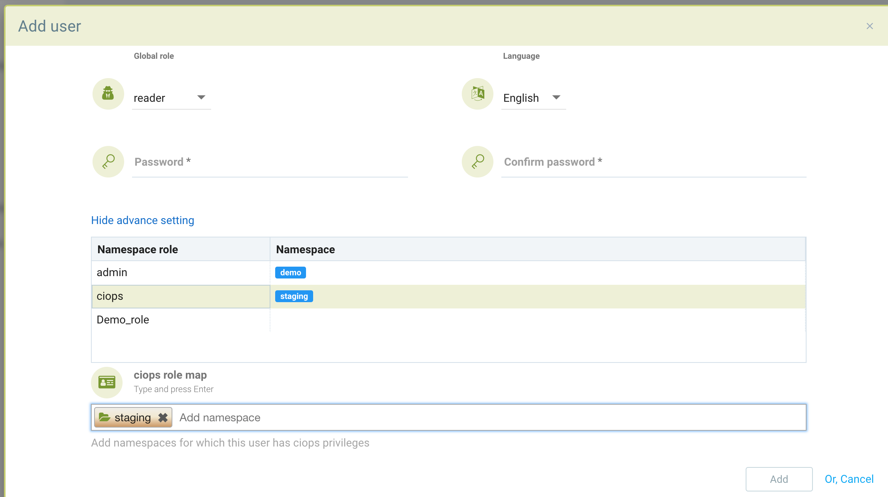
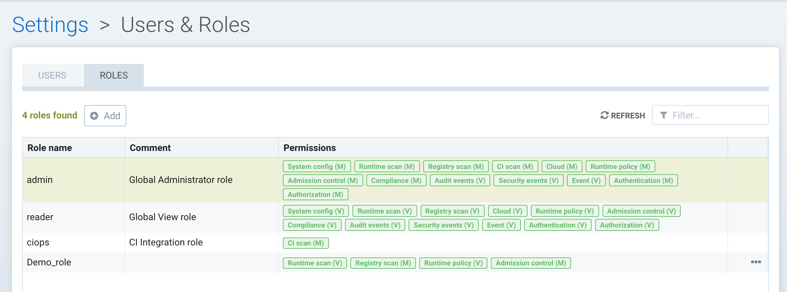
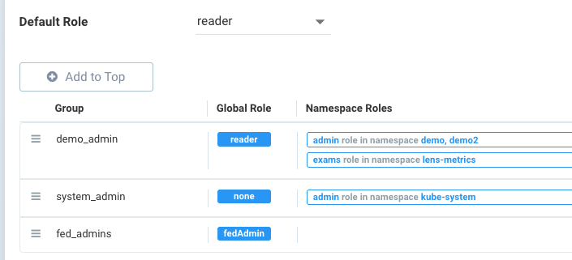

Usuários e funções
Configurando Usuários e Funções Personalizadas
O menu Configurações → Usuários e Funções permite a gestão de usuários e funções. Cada usuário é atribuído a uma função predefinida ou personalizada. Os usuários podem ser mapeados para funções através da integração de grupos com LDAP/AD ou outras integrações de sistema SSO. Veja a seção Integração Empresarial para instruções detalhadas para cada tipo de diretório ou integração SSO.
Usuários
Os usuários podem ser configurados diretamente em SUSE® Security ou integrados através de diretórios/SSO. Para criar um novo usuário em SUSE® Security, vá para Configurações → Usuários e Funções e adicione o usuário. Selecione a função do usuário entre as funções predefinidas ou veja abaixo para criar uma função personalizada.
O requisito padrão de senha é um mínimo de 8 caracteres, 1 letra maiúscula, 1 letra minúscula e 1 caractere numérico. Esses e outros requisitos podem ser alterados por um administrador em Configurações → Usuários sob Políticas de Autenticação e Segurança.
Usuários Restritos a Namespace
Os usuários podem ser restritos a certos namespaces. Primeiro, selecione a função global (use 'nenhuma' se nenhuma função global for desejada), depois clique em Configurações Avançadas.
Selecione um nome de função na lista de funções e, em seguida, insira o(s) namespace(s) aos quais o usuário tem acesso. Por exemplo, abaixo está uma função de leitor global (apenas visualização), mas para o namespace 'demo' o usuário tem permissões de administrador e para o namespace 'staging' o usuário tem permissões de CI/Ops. Se uma função personalizada foi configurada anteriormente, ela também pode ser selecionada.

|
Se um usuário já fez login anteriormente através de uma integração empresarial, seu Provedor de Identidade (por exemplo, OpenID Connect) será listado. Um usuário pode ser promovido a um administrador federado se a gestão de múltiplos clusters estiver em uso, selecionando o usuário e editando. |
|
Quando um usuário restrito a um namespace configura um registro em Ativos em SUSE® Security, apenas usuários com acesso a esse namespace podem ver/escaneá-lo. Usuários globais poderão ver e gerenciar esse registro, mas não aqueles com namespaces ou funções restritas. |
Funções
As funções pré-configuradas incluem Administrador, Leitor e CI/Ops. Para criar uma nova função personalizada, selecione a aba Funções em Configurações → Usuários e Funções. Nomeie a função e adicione a permissão de leitura ou escrita apropriada a ela.

Permissões RBAC
-
Controle de Admissão. Gerenciar regras de controle de admissão.
-
Eventos de Auditoria. Ver Notificação → logs de relatórios de Risco.
-
Autenticação. Habilitar configuração de diretório e SSO (oidc/saml/ldap).
-
Autorização. Criar novos usuários e funções personalizadas.
-
Escaneamento CI. Permite escaneamento em imagens através da API REST. Útil para configurar um usuário de scanner de plug-in na fase de construção.
-
Conformidade. Crie scripts de conformidade personalizados e revise os resultados da verificação de conformidade.
-
Evento. Acesse as notificações → dos logs de eventos.
-
Verificação de registro. Configure a verificação de registro e visualize os resultados.
-
Política de runtime. Gerencie os menus de política para o Modo de Política (Descobrir, Monitorar, Proteger), Regras de Rede, Regras de Processo, Regras de Acesso a Arquivos, DLP, Captura de Pacotes, Regras de Resposta.
-
Verificação de runtime. Acione e visualize a verificação de vulnerabilidade em runtime de contêineres/nós/plataforma.
-
Evento de Segurança. Acesse as notificações → dos logs de Eventos de Segurança.
-
Configuração do Sistema. Permita a configuração em Configurações → Configuração.
Mapeamento de Grupos para Funções e Namespaces.
Grupos podem ser mapeados para funções predefinidas ou personalizadas em SUSE® Security. Além disso, uma função pode ser restrita a um ou mais namespaces.
Na configuração LDAP/AD, SAML ou OIDC em Configurações, a última seção da tela de configuração mapeia Grupos para Funções e Namespaces. Primeiro, selecione uma função padrão, se houver, para mapeamento.

Para mapear um grupo a uma função e namespace, clique em Adicionar para criar um novo mapeamento. Selecione uma função global ou nenhuma. Se o admin ou o FedAdmin for selecionado, isso concede acesso de gravação a todos os namespaces. Se uma função diferente for selecionada, ela pode ser ainda mais restrita selecionando o(s) namespace(s) desejado(s).

O seguinte exemplo fornece alguns mapeamentos possíveis. O Demo_admin pode ler/ver todos os namespaces, mas tem direitos de admin nos namespaces demo e demo2. O System_admin tem apenas direitos de admin no namespace kube-system. E os fed_admins têm o papel pré-definido de fedAdmin, que concede acesso de gravação a todos os recursos em vários clusters.

|
Se o usuário estiver em vários grupos, a função será a 'primeira correspondente' na ordem listada e a função do grupo será atribuída. Por favor, ajuste a ordem de configuração para um comportamento adequado arrastando e soltando os mapeamentos na ordem apropriada na lista. |
Papéis de FedAdmin e Admin Multi-Cluster para Gerenciamento Primário e Remoto
Quando um cluster é promovido para se tornar um cluster primário, o admin se torna um FedAdmin automaticamente. O FedAdmin pode realizar operações no primário, como gerar um token de federação para conectar um cluster remoto, bem como criar regras de segurança federadas, como regras de rede, de processo, de arquivo e de controle de admissão.
As funções de gerenciamento multi-cluster são as seguintes:
-
Em qualquer cluster, um admin local ou um admin do Rancher SSO pode promover o cluster para se tornar primário.
-
Usuários LDAP/SSO/SAML/OIDC com funções de admin não podem promover um cluster a primário.
-
Apenas o FedAdmin pode gerar o token necessário para juntar um cluster remoto ao primário.
-
Qualquer admin, incluindo usuários LDAP/SSO/SAML/OIDC, pode juntar um cluster remoto ao primário se tiver o token.
-
Apenas o FedAdmin pode criar um novo usuário como FedAdmin (ou FedReader) ou atribuir a função de FedAdmin (ou FedReader) a um usuário existente (incluindo usuários LDAP/sso/saml/oidc).